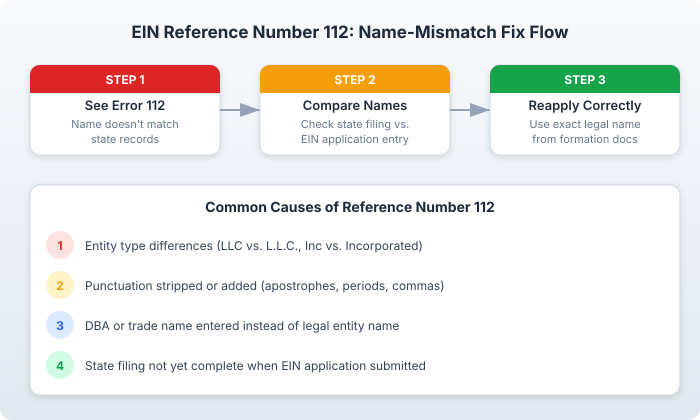

The short version
TL;DR: IRS EIN Reference Number 112 means the business name on your EIN application does not match the name registered with your state. The fix: compare your EIN entry against your state formation documents, correct any differences, and reapply online. This is a data-entry issue, not a system error.Last updated: 2026-08-18
What Reference Number 112 Actually Means
You filled out the IRS online EIN application, hit submit, and got Reference Number 112. It is a straightforward data-mismatch error. The IRS system cross-checks the business name you enter against the name your state has on file. When those two do not match, you get Reference Number 112.
This is different from Reference Number 109 (technical system errors) or Reference Number 101 (SSN/ITIN problems). Number 112 is specifically about your business name. The good news: it is entirely within your control to fix.
Why Your Name Does Not Match (Common Causes)
Reference Number 112 usually traces back to one of these specific mismatches:
Entity type abbreviation differences. Your state may have registered "Sunrise Tech LLC" but you entered "Sunrise Tech L.L.C." or "Sunrise Tech, LLC." The IRS and your state may treat these as different names. Check your Certificate of Formation or Articles of Organization for the exact punctuation and spacing.
Abbreviation vs. full word. You entered "Inc" but the state has "Incorporated." Or you typed "Co" instead of "Company." State filings use specific wording, and the EIN application needs to match it character-for-character.
Punctuation stripped or added. Apostrophes, commas, periods, and ampersands are common trouble spots. If your state filing says "John's Bakery, LLC" and you entered "Johns Bakery LLC" (no apostrophe, no comma), that is a mismatch. The IRS has specific rules for punctuation: apostrophes get removed without adding a space, periods get replaced with spaces or removed entirely.
DBA or trade name confusion. If you entered a "doing business as" name instead of your legal entity name, the IRS will flag it. The EIN application requires the legal name exactly as it appears on your state formation documents, not your assumed or trade name.
State filing not yet complete. If you submitted your EIN application before your state finished processing your LLC or corporation formation, the IRS may not find a matching record. The IRS states that if you are creating a corporation or LLC, you should form your entity through the Secretary of State before applying for an EIN.
Responsible party name entered as business name. Some applicants accidentally enter their own name or a person's name in the business name field. The EIN application has separate fields for the business name and the responsible party. Make sure you are filling in the right one.
How to Fix Reference Number 112 (Step by Step)
Step 1: Pull Your State Formation Document
Find your Certificate of Formation (LLC) or Articles of Corporation. This is the document your state Secretary of State stamped or approved. It has the exact legal name of your business. If you filed online, check your email for the confirmation. If you used a formation service, log in and download the document.
If you cannot find it, search your state Secretary of State business name database. Most states have a free online lookup tool.
Step 2: Compare Every Character
Open your formation document side-by-side with what you entered on the EIN application. Check:
- Exact spelling of every word
- Punctuation (commas, periods, apostrophes)
- Entity type abbreviation (LLC vs. L.L.C. vs. Limited Liability Company)
- Capitalization (though the IRS is generally case-insensitive on this)
- Ampersands (&) vs. the word "and"
- Spaces between words
The IRS requires that your business name match the name on your state registration documents. Even small differences like an extra period or a missing comma can trigger Reference Number 112.
Step 3: Reapply Online With the Correct Name
Go back to the IRS EIN online application and start a new session. Enter the name exactly as it appears on your state formation document. The application resets after 15 minutes of inactivity, so have all your information ready before you begin: business name, entity type, state, responsible party SSN or ITIN, reason for applying, and expected employee count.
If the name matches your state records this time, you should get your EIN immediately online.
Step 4: If It Still Fails, File Form SS-4
If you have corrected the name and still get Reference Number 112, there may be a delay in your state's records syncing with the IRS system. In that case, file Form SS-4 by fax or mail:
- Fax: 855-641-6935 (expect 2 to 4 business days for your EIN)
- Mail: Internal Revenue Service, Attn: EIN Operation, Cincinnati, OH 45999 (expect 4 to 6 weeks)
You can download Form SS-4 from IRS.gov.
Step 5: Verify Your State Filing Is Complete
If you filed your LLC or corporation formation recently, check with your state Secretary of State to confirm the filing is fully processed. Some states take several business days to finalize. The IRS cannot match a name that does not yet exist in the state's database.

Resolution Timeline
- Immediate: If the name mismatch was a typo, fix it and reapply. You will have your EIN within minutes.
- 2 to 4 business days: Faxed Form SS-4 applications. The IRS will fax back your EIN confirmation if you provide a fax number.
- 4 to 6 weeks: Mailed Form SS-4 applications. Use only as a last resort.
- Variable: If your state filing is still processing, wait for your state to finalize before the IRS can match it.
When to Call the IRS
You should call the IRS Business and Specialty Tax Line at 800-829-4933 (Monday through Friday, 7:00 AM to 7:00 PM local time) if:
- You have corrected your name to match your state filing exactly and Reference Number 112 persists
- Your state confirms your formation is fully processed, but the IRS still cannot find a match
- You applied by fax and have not received your EIN after 4 business days
- You need your EIN urgently for banking, hiring, or tax filing and the online system keeps failing
Press option 1, then 1, then 3 to reach an EIN specialist. Call early in the morning for shorter hold times. During peak periods, hold times can exceed 60 minutes.
Non-U.S. Founders: Special Considerations
If your principal place of business is outside the United States, you cannot use the IRS online EIN application. You must apply by phone (267-941-1099), fax (855-215-1627 within the U.S., 304-707-9471 outside), or mail Form SS-4 to the IRS International Operation in Cincinnati. Reference Number 112 is an online-system error that should not affect you if you apply through these channels.
For non-U.S. founders who need help with the EIN process, formation services like doola handle the entire application, including IRS coordination and paperwork.
Preventing Reference Number 112
A few habits prevent this error:
- Have your formation document open when you start the EIN application.
- Copy-paste the business name from your state filing rather than retyping it.
- Form your state entity first. The IRS recommends this before applying for an EIN.
- Use the exact entity type abbreviation that appears on your filing.
- Check the IRS name formatting rules before you type (apostrophes removed, periods become spaces, slashes become hyphens).
Frequently Asked Questions
Does Reference Number 112 mean my EIN application was rejected?
Not permanently. Reference Number 112 means the name you entered does not match your state records. Once you correct the name and reapply, you should receive your EIN without issue. Your application data is not saved between attempts, so you will need to start a new session.
Can I fix Reference Number 112 without filing Form SS-4?
Yes, in most cases. The standard fix is to correct the business name on the online application and resubmit. You only need Form SS-4 if the online system continues to reject your application after you have verified the name matches your state filing.
What if my state filing is still processing?
You need to wait for your state Secretary of State to fully process and approve your formation before the IRS can match the name. Check your state's processing times. Some states process online filings in 1 to 3 business days; others take longer. Once the state confirms your filing, retry the EIN application.
Does it matter what time of day I apply?
For Reference Number 112 specifically, timing does not matter because the issue is a data mismatch, not system traffic. However, if you are also hitting technical errors (like Reference Number 109) alongside 112, applying during off-peak hours can help. The IRS online EIN tool is available Monday through Friday from 6:00 AM to 1:00 AM Eastern, Saturday from 6:00 AM to 9:00 PM, and Sunday from 6:00 PM to 12:00 AM.
Is there a fee to apply for an EIN?
No. The IRS charges nothing for EIN applications. You can apply directly through the IRS at IRS.gov for free. Third-party services that charge fees are providing assistance, not the EIN itself.
What if I do not have an SSN or ITIN?
The IRS online application requires a valid SSN or ITIN from the responsible party. If you do not have one, you cannot use the online portal. You will need to apply by phone, fax, or mail using Form SS-4. A service like doola can handle this process for you, including IRS coordination for international founders.